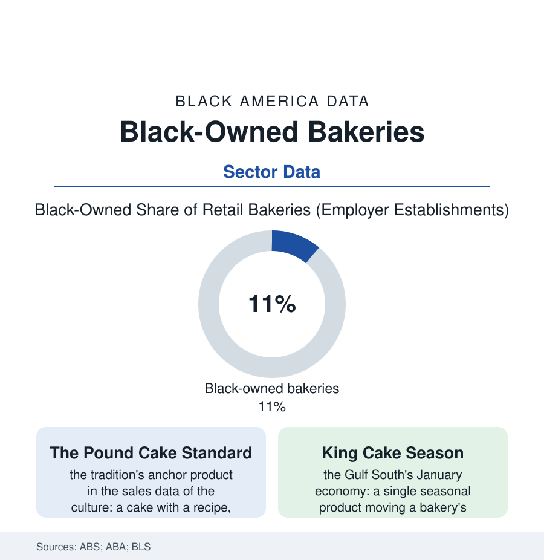

Black Business
The Bakery Shelf: Black-Owned Bakeries and the Dessert Economy
From the pound cake's church economy to the cupcake boom and the king cake's seasonal empire, Black bakeries run one of the food business's sweetest ledgers. The bakery file.

Every community in this atlas keeps a bakery the way it keeps a barbershop: by name, by reputation, by the cake that cannot be gotten anywhere else. Black-owned bakeries — retail shops, wholesale plants, home-based brands gone national — form one of the food economy's most beloved shelves, built where the culinary tradition, the church economy, and the celebration calendar meet. This article reads the bakery file.
The Tradition as Inventory
The product line is the culture itself, itemized: the pound cake (the tradition's anchor — a recipe economy of named cakes and guarded variations, the church cookbook and the family card file as its R&D archive), the sweet potato pie (whose seasonal volumes rival the pumpkin's in the grocery data of the South — the Thanksgiving shelf a Black recipe's national conquest filed without fanfare), the peach cobbler, the red velvet whose color history the food historians trace through the Black South's kitchens, the tea cakes of the oldest tradition, and the regional crowns — the king cake's January empire in the Gulf data (a six-week season underwriting bakeries' whole quarters, the plastic baby as the industry's most famous unit of inventory), the dobash and the hummingbird, the benne wafer of the Charleston file. The business census counts the shelf's form: retail bakeries' Black ownership running ahead of the restaurant average — the bakery's economics (the morning daypart, the celebration order book, the wholesale account) suiting the family firm's structure — alongside the home-based tier (the cottage-food economy's sweetest shelf, the Instagram storefront converting the church reputation into a shipping business, the brands that ride a single cake from the kitchen to the grocery freezer case in the decade's documented ascents). The training lineage runs through the catering file's kitchens and the culinary schools, with the French pastry tradition's Black masters — the competition and television era's celebrated pâtissiers — repricing the shelf's top end in the wedding file's cake line (the four-figure wedding cake as sculpture market, the Black cake artists of the bridal magazines' features).
Flour, Sugar, and the Cost Stack
The bakery's P&L is the food business's most commodity-exposed in the cost data: the flour and sugar and butter and egg rows (the egg-price spikes of the recent years compressing the small bakery's margin to the vanishing point in the trade surveys — the cake's price stickiness against the ingredient's volatility the shelf's standing crisis), the morning labor's premium (the baker's 3 a.m. shift the occupation file's hardest hour to staff), the storefront's rent against a daypart that ends at noon for the retail case. The shelf's answers are in its growth rows: the wholesale pivot (the coffee shop and grocery accounts smoothing the week), the celebration economy's insulation (the custom cake's price set by the occasion, not the commodity — the wedding and graduation and repast books the revenue's ballast), the frozen and mail-order extensions (the pound cake ships like a book, and the brands that learned it in the shipping data now sell in all fifty states from one kitchen), and the commissary-to-flagship ladders of the catering file repeating in sugar. The cultural accounting closes the file: the bakery is the celebration economy's foundry — the place where the community's joy is quite literally manufactured to order, its order book a calendar of the neighborhood's weddings, birthdays, homecomings, and homegoings, written in buttercream. A business whose demand is the community's happiness, recurring weekly, is a business the census can count but only the line out the door on a Saturday morning can truly size.
Reading the Bakery Data
The bakery file is the business section at its warmest: a shelf built from the recipes the grandmothers priced by reputation before anyone priced them by the slice. The census counts the shops. The order books — full for June, full for the holidays, the king cakes spoken for by Epiphany — keep the real ledger, in the community's own hand. And somewhere in every city in this atlas, tomorrow's celebration is already in somebody's oven — ordered days ago, by a family that would not dream of buying it anywhere else, which is the oldest and strongest market position in the entire business section.
More in Black Business
Black-Owned Businesses: Counts, Receipts, and the Representation Gap
About 161,000 Black-owned employer firms and three million solo ventures: how the Census Bureau counts Black business ownership, where firms concentrate, and the gap between population share and business share.
Black Median Net Worth: The Wealth Gap in Federal Reserve Data
The Federal Reserve puts Black median family net worth at $44,900, against $285,000 for White families — about 16 cents on the dollar. The widest gap in economic data.
Black Buying Power: The $1.8 Trillion Consumer Economy
Black buying power is estimated at about $1.8 trillion — larger than the economy of most nations. What the figure measures, who produces it, and what it buys.
Source: U.S. Census Bureau Annual Business Survey; American Bakers Association; Bureau of Labor Statistics food manufacturing data; Small Business Administration research.